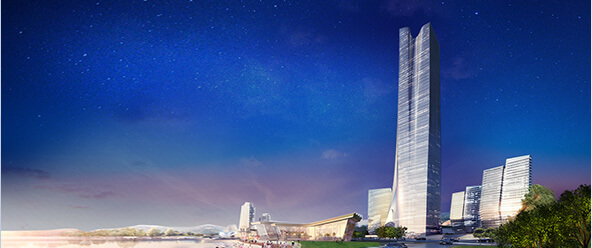

280米地标
280 METERSTALL LANDMARK
设计理念DESIGN CONCEPT

（1）地利与定位
设计凭藉此优越的中心地利，项目综合体集办公、酒店、Soho、商业及休闲娱乐等功能于一体，通过自身有机的整合与明确的定位，在各彼此之间建立起一种相互依存、资源共享的能动关系，从而形成一个多功能、高效率而统一的城市“活力核”。
（2）开创性
威海面向未来在城市、文化及经济上蓬勃的发展及跃进，项目设计具备超前的国际商务中心区思维，裙房造型现代、 塔楼标致而明快，体现出国际商业商务建筑的属性, 定位于山东省发展高度，成为国家东部新亮点及典范。
(3)城市肌理，因地制宜
本项目旨在有效利用场地高差，结合基地现状地形特色，为市民提供开放式、及内向型并存的景观空间和人文空间，以创造建筑与自然共生共利的有机条件，商务与场地配合的绿化舒适环境。
(4)都市活化器
裙房设计对街道的活化产生关键作用，设计沿地面层布置了大量的商店及餐饮, 加上以景观广场连系周边商业活动，大大加强了CBD区的公共与互动性能。
(5) 资源最大化
塔楼之朝向与布局使景观最大化，实现100%自然采光，提供舒适开阔景观的办公及酒店环境, 增加工作效率及舒适度。
(6)平面布局
为了使各功能具有较好的使用性，采用明快的动线规划。布局衍生自立体人行网络的重叠,打造聚人气项目中心，外型以多层次的平台及花园展示，将自然的绿化景观引进商务空间中，两者融合成一体。动感而具变化的形态鼓励及吸引商务及商业人士流动，而充满空间感的裙房将创造适舒而难忘的商业购物体验，有助建立及强化核心区内的商务商业氛围。
功能分区FUNCTIONAL PARTITION
位于280米塔楼部分的高区，建筑面积约3.6万㎡（含避难层面积）。
指标要求
- 功能 产品标准
- 标准层面积 1800-2000平方米，考虑约40个办公层
- 标准层层高 层高4.2米，净高2.8米
- 大堂 约700平米，层高不小于12米
- 楼层分区 280米塔楼的低区和中区
- 电梯设置 按人流量计算值设置，并分低区和中区设置
- 核心筒设施 男女洗手间、残障洗手间、茶水间、吸烟室、垃圾房
- 交楼标准 建议标准写字楼装修交楼标准（天花吊顶、架空地台）
- 合计 约8万㎡
- 备注 避难层按相关规定：不得超过15层设置1个避难层；超高层塔楼顶部考虑停机坪设计
位于280米塔楼部分的高区，建筑面积约3.6万㎡（含避难层面积）。
指标要求
- 功能 产品标准
- 客房 300间（270间标间+30间套房),标准间面积不小于50㎡；所有标准客房均含有四件套设施的浴室
- 标准层层高 层高4.2~4.5米，净高3米
- 大堂 层高不小于6米
- 楼层分区 280米塔楼的高区
- 餐饮场所 包括一个大堂酒吧，一家全日供应餐厅，和一家中餐厅（应包括至少15间包房；包房中配有休息区、洗手间、配菜间及其他必要设施，且面积不应小于150 ㎡）；
-
会议场地
3000 ㎡用作会议场地；包括商务中心、功能及会议厅以及宴会厅
备注:不计入3.6万㎡之中,与裙房5000㎡会议中心统一考虑; - 水疗和健身设施 含健身房/健身设施，男女更衣室等；游泳池及水疗设施
-
行政办公室
及后勤区域 给酒店使用的行政办公室、后勤办公室、厨房、洗衣房等其他后勤区域,在地下一层设置 - 合计 约8万㎡
- 备注 避难层按相关规定：不得超过15层设置1个避难层；超高层塔楼顶部考虑停机坪设计
按照SOHO居住办公一体设计，建筑面积约4万㎡。
指标要求
- 功能 产品标准
- 标准层面积 1200-1500㎡,考虑约26个办公楼层（含裙房2层）
- 标准层层高 层高3.5米（底部裙房高度约6米）
- 办公单元数 16~20个/层
- 办公单元面积 40-120㎡
- 电梯设置 按人流量计算值设置
- 办公单元设施 洗手间、厨房
- 交楼标准 毛坯
- 合计 约4万㎡
位于280米塔楼及100米SOHO办公楼下，局部与南侧酒店式公寓地下室相连，其中CBD区地下室约6万m2，南侧公寓地下室约4万m2。
指标要求
- 功能 产品标准
-
会议中心
层高约为6米；建筑面积约5000㎡；
备注： 1.包含五星级酒店中的3000 ㎡的宴会及会议场地;
2.该中心兼具备剧院功能;
3.此部分统一纳入酒店管理; -
商务配套
层高约为6米；建筑面积约10000㎡;
备注： 不包含写字楼及SOHO大堂面积， 不包含酒店入口及交通核面积；
- 合计 约1.5万m2
位于280米塔楼及100米SOHO办公楼下，局部与南侧酒店式公寓地下室相连，其中CBD区地下室约6万m2，南侧公寓地下室约4万m2。
城市影响力TCITY INFLUENCE
280米的超高层建筑刷新了威海的建筑最高纪录，且最大限度的尊享海景景观，成为威海唯一拥有广阔海景资源的地标建筑，体现了 “一览众湾小，惟此九龙湾”的项目定位。